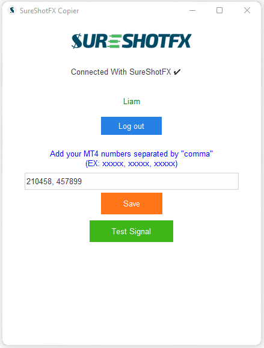
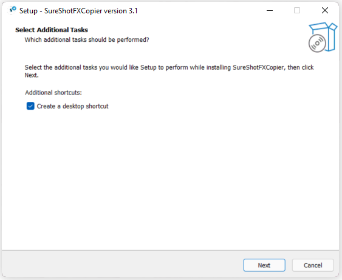
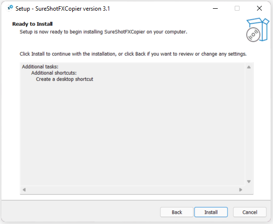
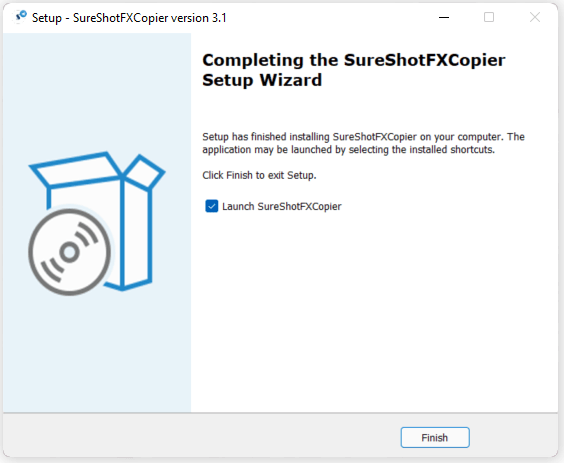

Super Fast Execution
Take the exact entry we take. Orders are pushed the moment a signal is published, so a one-pip move no longer turns into a missed trade.
The SureShotFX Trade Copier is a Windows application that mirrors every entry, stop-loss change, partial close and move-to-breakeven from our VIP channels into your own broker account — in milliseconds, on up to three accounts at once.
No EA to configure, no coding, no VPS scripts. Install it once, choose your risk rules, and it works quietly in the background while you keep full control of your funds, your broker and your leverage.
SSF Copier — Console
v4 · Windows
13:42:07.118VIP → MT5
XAUUSD BUY 0.20 @ 2648.40
SL 2641.90 · TP1 2661.00 · TP2 2674.20
↳ copied to Account #1 & #2 · 0.04s
A seamless blend of automation and control for optimal risk management. Most forex signal trade copier tools stop at the entry price — SSF Copier mirrors the whole trade lifecycle, so your account behaves like the desk's.
Copy every profitable signal automatically — plus every follow-up command: set SL and TP, move SL to breakeven, close half, close partial, close all. You never have to read a message and re-enter an order by hand.
Pick your own risk parameters: fixed lot size, a percentage of balance, partial-close percentage, spread tolerance and slippage. The copier scales the signal to your account instead of forcing one size on everyone.
Hard stops, skipped symbols and a spread guard remove the two most expensive mistakes in manual copying: entering late and entering at a worse price. Trade without watching every candle.
Signals stay human
The copier executes; analysts still decide. Nothing is generated by the software.
Your account, your broker
Funds never leave your brokerage. The copier only sends orders to your terminal.
One licence, three accounts
Run the same rules on a live account, a second broker and a prop account at the same time.
Eight features built for one job: making your fills look like ours. No add-ons, no subscription tiers — everything below ships with the lifetime licence.
MT4 & MT5
Windows 10 / 11 or VPS
Take the exact entry we take. Orders are pushed the moment a signal is published, so a one-pip move no longer turns into a missed trade.
A real-time Telegram alert lands whenever a signal is inserted or an order closes, including the order details — even when the PC is in another room.
Half close, partial close, full close and move-SL-to-entry are applied automatically as the desk posts them. No manual intervention, no forgotten stops.
Choose fixed lots based on our guidance, or risk a percentage of your balance with dynamic lot sizing that updates as your equity changes.
Spread is calculated for each call before the order goes in, so a wide Asian-session or news spread does not silently eat your risk-to-reward.
Not trading a pair, or already exposed to it? Exclude the symbol once and the copier skips every future call on it without touching the rest.
Cap how far a fill may drift from the signal price. Tune it to your broker's execution instead of accepting whatever the market gives you.
Three clicks, under two minutes, plus video documentation and free remote help on your first installation. No technical background needed.
Already following the desk manually? The copier is the execution layer for the same forex signal copier service — the analysis does not change, only the speed and consistency of your fills.
See the workflow →The copier connects your MT4/MT5 terminal to the VIP channels and replays every instruction on your account. You stay in control of the terminal, the broker and the risk — it only removes the delay.
Buy the lifetime licence with the Black Friday coupon, then check your inbox for the download link and licence key. No subscription, no renewal.
The copier mirrors SureShotFX signals, so it needs channel access. Connect Forex VIP, Gold VIP, Indices VIP — or all three with the Combo Bundle.
Run the installer on a Windows PC, laptop or VPS. Press Next, Install, Finish — the whole setup takes under two minutes on a stable connection.
Log in to up to three MT4/MT5 accounts, pick fixed lots or % risk, set slippage, then arm the copier. New signals execute from the next one onward.
Unlike other copiers, you do not install a separate piece of software for every MT4/MT5 account. One licence covers three accounts inside one window — a live account, a second broker and a funded/prop account, all following the same rules.

Official SSF Copier interface — one console, three accounts.
Zero-hassle installation. Three clicks and you are good to go. Download SSF-TradeCopier-Setup.exe, run it, and the copier opens on your desktop — no EA files, no MetaEditor, no DLL configuration.



Stuck on a firewall prompt, antivirus warning or VPS permission? Free development support is included on your first installation.
Installation FAQ →The copier is deliberately light. If your machine can run MetaTrader and stay online, it can run the copier — most traders use a cheap Windows VPS so execution continues while their laptop is closed.
Non-negotiable
An active SureShotFX VIP channel subscription. The copier is the execution tool — it copies our signals, so there has to be a signal feed to copy.
No EA or coding. It runs as a desktop app beside MetaTrader, not as a chart expert advisor.
Your funds stay put. The copier has no withdrawal rights and never holds client money.
No monthly fee, no per-account charge, no upgrade path to unlock features. Buy once, use it on three accounts for as long as you trade.
Lifetime licence
Windows · MT4 & MT5 · up to 3 accounts
Lifetime for 3 accounts · no renewals · free updates
Requires an active VIP subscription.
Combo members get the Trade Copier, Guardian and all three VIP channels in one lifetime or subscription plan — no separate $49.99 purchase.
Send us your broker, platform and VPS details before you buy. Support will confirm compatibility and can walk you through the install remotely.
Ask on TelegramPayments are handled by our checkout provider. The copier is a digital product and is non-refundable once the licence key has been issued, except where required by law.
A SureShotFX review from traders who actually run the software: full-time workers, prop traders and people who simply do not want to stare at charts. All six are reproduced from the official Trade Copier page.
3
Accounts
8
Features
Lifetime
Licence
Highly recommend Copier
They give accurate signals with high accuracy and their copier is magic — nothing to do, only auto mode, and you gain profit. Follow risk management and lot size and you will surely gain profit.
Fitness lifeline
Copier user
Love Copier Service
Love this service. I have purchased the lifetime subscription for both Gold and VIP Forex Signals with the Auto-copier. This week I'm up in excess of 60% on my account thanks to Sureshot FX.
Eban Szelesl
Lifetime licence · Gold + Forex
Awesome 50% Profit in 2 Weeks!
I have followed SureShotFX with the copier for two weeks and made over 50% profit on my account. That's very awesome! I think it's a wise decision I have made that would change my life.
Fendy
Copier user
Helpful for busy traders
I work full time, so I can't always place trades manually. The SureShotFX copier helps me stay connected to the signals without missing entries. Setup was easier than I expected.
Ayaan Khan
Full-time trader · part-time user
Simple and stable
Once everything is connected, it runs quietly in the background. That's exactly what I wanted from a copier.
Lucas Meyer
Multi-account user
Easy to manage
I'm not very technical, but I found the setup manageable. After that, it's mostly hands-off. Trades copy automatically without constant checking.
Daniel Rossi
First-time copier user
Individual results vary. The 60% and 50% figures are the reviewers' own reported account results, not typical, average or guaranteed outcomes. Trading leveraged products can lose more than your deposit.
Everything traders ask before installing the SSF Copier on MT4 or MT5.
It is a Windows desktop application that connects your MetaTrader 4 or MetaTrader 5 terminal to the SureShotFX VIP channels. When an analyst posts a signal, the copier opens the same trade on your account and then mirrors every follow-up: stop-loss and take-profit levels, partial closes, half closes and move-to-breakeven. It is an execution tool, not an advisory service — the trade ideas come from the VIP desk.
Yes. Once your accounts are connected and the copier is armed, it operates automatically — entries, exits and trade management are applied without any manual intervention. You can pause copying at any time from the console.
Yes. The copier copies our VIP signals, so it needs a signal feed. You can connect Forex VIP, Gold VIP, Indices VIP or all three through the Combo Bundle. Buying the licence alone gives you the software but nothing to copy.
Yes. The copier supports both MetaTrader 4 and MetaTrader 5, including accounts on different brokers at the same time. You do not need separate licences or separate installs for each platform.
A Windows PC or laptop (Windows 10 or 11), or a Windows VPS, plus a stable internet connection and your MT4/MT5 login details. Mac and Linux users typically run it on a Windows VPS. The copier must stay running for trades to copy.
The lifetime licence allows up to three accounts simultaneously, for example a live account, a second broker and a funded or prop account. Each account can use its own lot sizing and symbol exclusions.
Execution is designed to be near-instant: the copier pushes the order as soon as the signal is published. Actual fill time still depends on your broker, your connection and market conditions — no software can guarantee an identical fill, which is why slippage limits and spread checks exist.
Yes. You can use a fixed lot size based on our guidance, or risk a percentage of your balance with dynamic lot sizing. You can also set partial-close percentages, a maximum spread, a slippage cap and a list of symbols to skip entirely.
Not at all. Installation is a three-step Windows wizard that takes under two minutes, and video documentation covers the rest. If you get stuck, support can connect remotely and finish the setup for you — free on your first installation.
Yes — 24/7 support on Telegram, plus free development support during your first installation. Support can check compatibility, help with firewall or antivirus prompts and confirm your account is copying correctly.
Yes. All updates to the Trade Copier are free for the life of your licence, including platform compatibility fixes and new features. You will not be asked to repurchase or upgrade to a new tier.
The copier is included with the Combo Bundle — it is part of what every combo plan unlocks, alongside Forex, Gold and Indices VIP. If you already hold a single-channel subscription, message support with your order details and they will confirm whether the copier is included or what the upgrade costs. Do not assume it is automatic.
Any broker that offers MT4 or MT5, including ECN, raw-spread, standard and cent accounts. The copier sends orders through your terminal, so the broker sees them as your own trades. Account type can affect spreads and execution speed, and those are exactly what the dynamic-spread and slippage settings are for.
No. The copier executes the VIP signals as they are published, so it does not block trades around economic releases. The Forex News Filter is a feature of SureShotFX Algo, which is a separate automated strategy product. On the copier you can exclude a symbol entirely through the Exclude Trade setting, but there is no economic-calendar filter built in.
Yes. This is the official SureShotFX Trade Copier distributed by the same team behind the SSF trading desk. Traders reach us through many spellings — SureShotFX, SureShot FX, Sure Shot FX, Sure Shot Forex, SureShot Forex, SSF trading or even “sure short” — all refer to the same brand. Download only from the link on this page or from official support; cracked copies are a common source of malware and account theft.
Whether you are setting up your first MT4 account, moving to a VPS or wondering how to size lots on a small balance, our team is one click away. Live chat answers within minutes, 24/7.
High-impact news, forex levels, gold catalysts and the week's index setups — the same context the desk uses before it posts a signal. No spam.
Check Promotion or SPAM for email.
Trade Copier — $49.99 lifetime
3 accounts · MT4 & MT5 · Black Friday